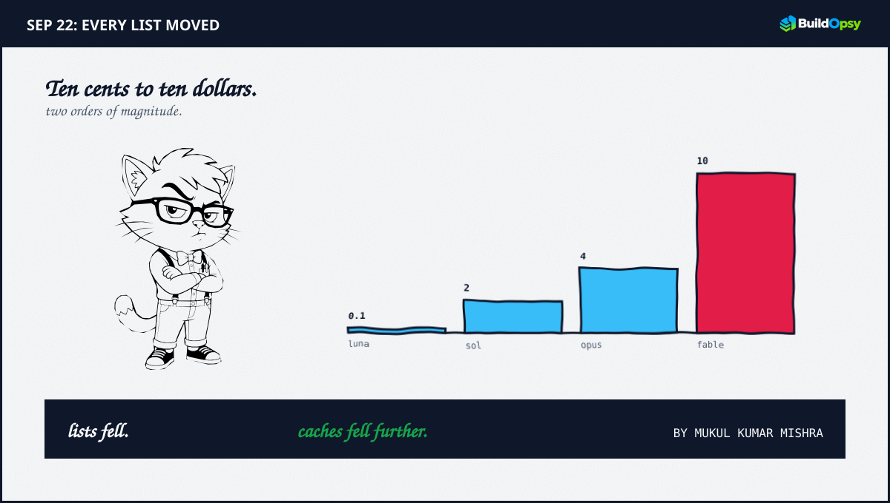
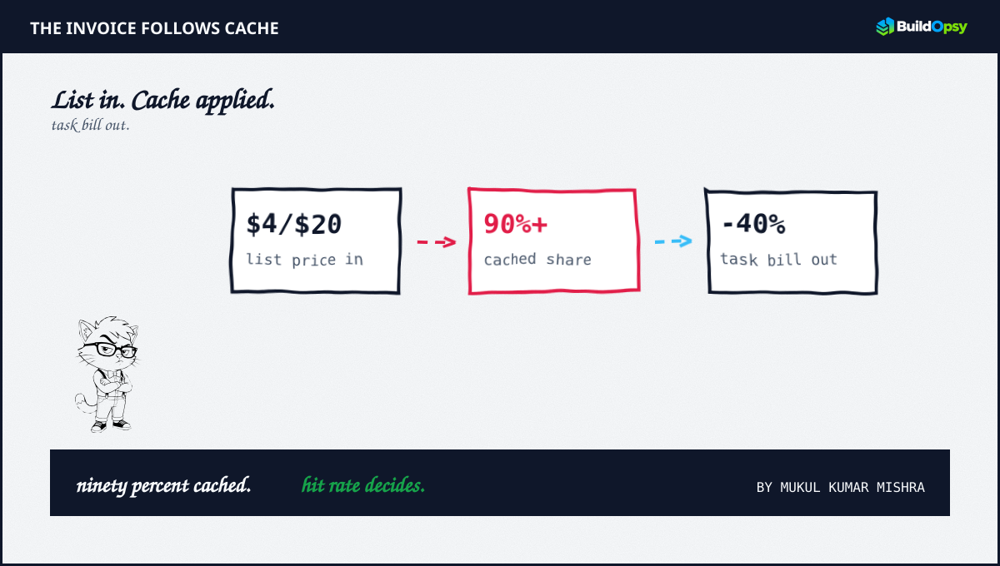

1. What happened on September 22
Anthropic opened with Claude Opus 5.5, first of the 5.5 family and first release since the pace-the-frontier call. Input $4 per million and output $20, down from $5 input and $25 output. Cache reads $0.20, down from $0.50. Terminal-Bench 4.0 at 66.4 percent against 52.3 for Opus 5. GDPval at 1846 Elo. Output over 30 percent faster. Context one million and max output 128K unchanged. Thinking stays always on with effort as the only control.
About an hour later OpenAI answered with GPT-6 Sol at $2 input and $10 output and GPT-6 Luna at $0.10 input and $0.50 output. Both roughly half their GPT-5.6 equivalents. GPT-5.6 carries a scheduled 25 percent hike in November, which makes the GPT-6 cut deeper than half against future prices. Grok 4.7 had priced at $2 input and $6 output the previous day, an undercut that survived barely twenty four hours before matching Sol on input.
Six days later Anthropic extended the family. Sonnet 5.5 shipped Sep 28 at Sonnet 5 prices, $2 input and $10 output, while writing over 30 percent faster and scoring 70.6 on Terminal-Bench 4.0, ahead of Opus 5.5 at 66.4. Haiku 5.5 follows in the coming weeks. The pattern is set. Mid tiers absorb flagship scores while flagships chase efficiency.
2. The table both vendors published
- GPT-6 Luna: $0.10 input and $0.01 cached and $0.50 output per million. The batch tier for everything cheap.
- GPT-6 Sol: $2 input and $0.20 cached and $10 output per million. Half of GPT-5.6 Sol across the row.
- Claude Opus 5.5: $4 input and $0.20 cached and $20 output per million. Twenty percent list cut and sixty percent cache read cut.
- Claude Fable 5.1 and GPT-6 Astra: $10 input and $50 output per million. The frontier ceiling both vendors kept.
Two details hide in the rows. Opus 5.5 fast mode bills double at $8 input and $40 output for faster output, down from $10 input and $50 output on Opus 5. It runs only on the Anthropic provider with no batch combination. Cache writes cost $5 for five minutes and $8 for one hour. LiteLLM shipped day-zero support with cost tracking, which tells you how fast proxies had to move. Pricing landed in a config reload, not a migration.
Benchmarks frame the value, with the usual vendor caution. Opus 5.5 leads Terminal-Bench 4.0 and FrontierCode and OSWorld computer use. Astra answers on Terminal-Bench-Science at 64.6 against 58.7. Anthropic itself warns that margins at this capability level guide less than they appear to. Scores rent attention. Bills arrive monthly regardless.

3. Why cache reads decide the bill
Long agentic conversations process more than 90 percent of input tokens at cached rates. System prompts and repo context and tool schemas repeat every turn. Only the newest tokens bill at list. A twenty percent list cut applied to ten percent of tokens moves the total two percent. A sixty percent cache read cut applied to ninety percent moves it fifty four. The second number is the story. The first is the headline.
Opus 5.5 compounds the cut with fewer tokens per task. Anthropic reports roughly 40 percent lower run cost against Opus 5 after both effects. That matches independent tracking. Day-zero proxy docs confirm the shape. Faster output and leaner traces and cheaper cache reads multiply instead of adding.
Sonnet 5.5 is the paradox that proves the model. Same list prices as Sonnet 5. Higher scores and faster writes and fewer tokens per task. The per-task bill falls with no price change at all. Any team routing on list price alone keeps sending work to Opus while Sonnet clears the same bar at half the line rate. Routing tables need benchmark and token-efficiency columns, not price columns.
4. The bill hides in the boundary
Assumptions are explicit. Model a one million task month with a 70-20-10 split across Luna class, Sonnet class, and Opus class workloads. Price the agent loop at 90 percent cached input and modest output per task. Numbers below size routing policy, not any invoice. Swap in your hit rates before spending.
Model the routing in three tiers. Bulk classification and extraction and evals go to Luna class at ten cents list with penny cache reads. Interactive coding and review go to Sonnet class where the 5.5 generation wins on speed and score per dollar. Reserve Opus class and frontier ceiling models for tasks that demonstrably fail one tier down, measured by retry cost rather than prestige. Fast mode stays off unless latency SLAs price it in explicitly.
Estimate the order of savings. Moving repeatable agent loops from list-rate Opus budgeting to cached Sonnet execution cuts the line by more than half before any vendor discount. Batch eligible offline work halves again at fifty percent off where supported. Compare that against single-tier routing where every task bills at flagship rates and retries re-bill full price. The price war handed you cheaper tokens. The cache math hands you fewer of them. Take both.
For the prefill and decode and batching method behind this math, see my inference cost per task teardown and size retry policy with my agent retry cost calculator. Different pages. Same missing guard. Cost needs method and meter and routing proof.
5. The verdict: route per task, not per token
Both vendors disclosed fast with prices and benchmarks and availability across clouds on day one. That candor helps buyers. The record still shows list prices doing the talking while cache rates do the billing. Teams that renegotiate tiers without remeasuring hit rates will celebrate the headline and miss the invoice.
For an infrastructure review, ask for the per-tier hit rate and tokens per task and retry share and the routing table with promotion criteria. Re-run the table after every model drop. September moved three lists in a day. The next move lands without warning. The bill hides in the boundary between list price and cached reality.
Until routing follows measured task cost, the safest budget is the one recomputed monthly. Price the task. Meter the cache. Promote on proof.
Frequently Asked Questions
What changed in frontier model pricing on September 22 2026?
Anthropic launched Claude Opus 5.5 at $4 input and $20 output per million tokens, down 20 percent from Opus 5. About an hour later OpenAI launched GPT-6 Sol and Luna at roughly half their GPT-5.6 equivalents.
Why do cache read prices matter more than list prices?
Long agentic runs process more than 90 percent of input tokens at cached rates. Opus 5.5 cache reads fell 60 percent to $0.20 per million, so the effective per-task bill drops faster than the 20 percent list cut.
What is the Sonnet 5.5 paradox?
Sonnet 5.5 kept Sonnet 5 list prices while beating Opus 5.5 on Terminal-Bench 4.0 and writing 30 percent faster. Same price and fewer tokens per task means a lower bill without a price cut.
Sources and Method
Prices and dates and scores follow Anthropic and OpenAI announcements Sep 22 and independent tracking below. Sonnet 5.5 details follow Sep 28 to 29 coverage. Per-task math is modeled with stated assumptions. For method see my inference cost per task teardown.
- Anthropic: Introducing Claude Opus 5.5 With Pricing and Benchmarks (Sep 22 2026)
- Simon Willison: Claude Opus 5.5 and GPT-6 Sol and Luna and a New Price War (Sep 22 2026)
- Mashable: Anthropic Launches Claude Opus 5.5 at Lower Price (Sep 22 2026)
- LiteLLM: Day Zero Support for Claude Opus 5.5 With Pricing Notes (Sep 22 2026)
- Believemy: Claude Sonnet 5.5 Nears Opus at Half Price (Sep 29 2026)